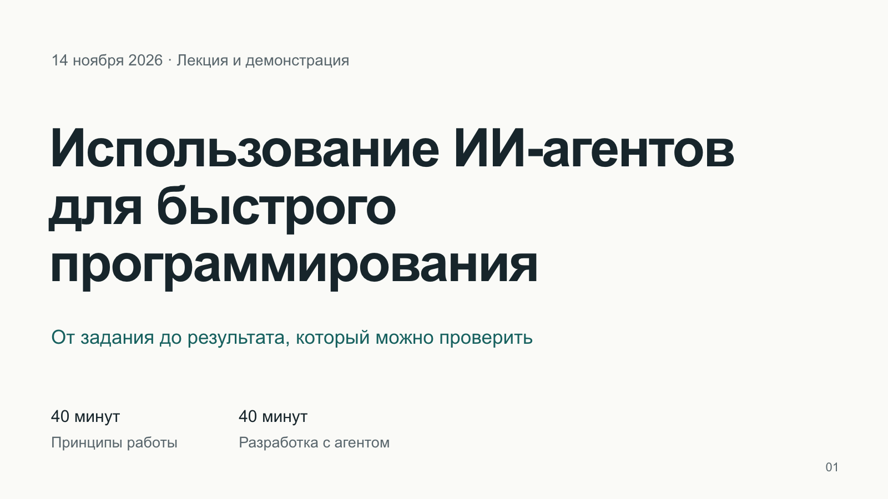
01. Использование ИИ-агентов для быстрого программирования 02. Жизненный цикл разработки
02. Жизненный цикл разработки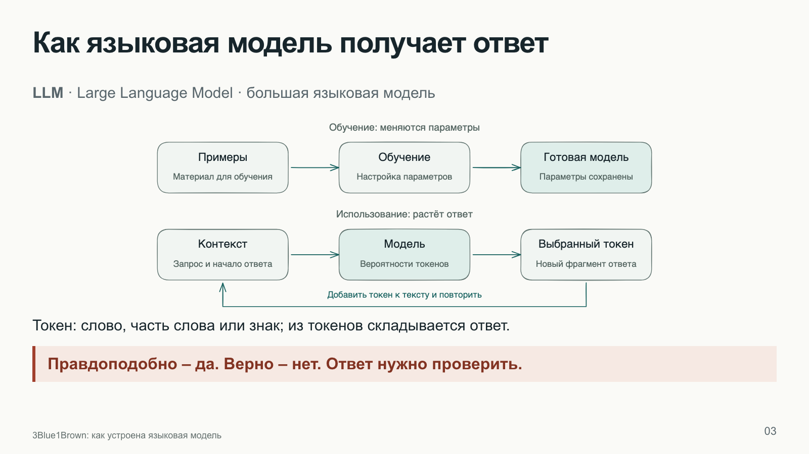
03. Как языковая модель получает ответ 04. Что модель видит в текущем запросе
04. Что модель видит в текущем запросе 05. ИИ-ассистент и ИИ-агент
05. ИИ-ассистент и ИИ-агент 06. Агентский цикл
06. Агентский цикл 07. Harness организует работу агента
07. Harness организует работу агента 08. Приложение, модель и провайдер
08. Приложение, модель и провайдер 09. Честный взгляд на доступ
09. Честный взгляд на доступ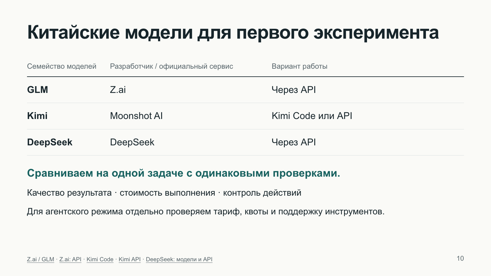
10. Китайские модели для первого эксперимента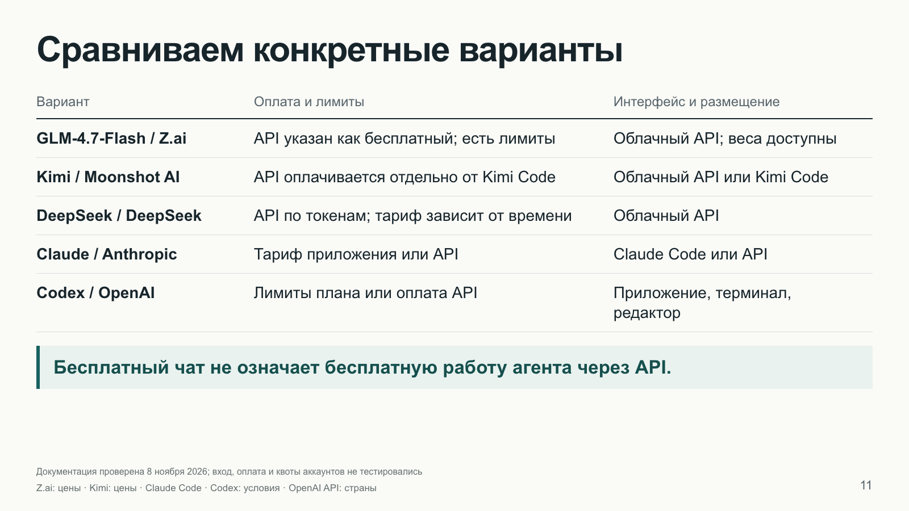
11. Сравниваем конкретные варианты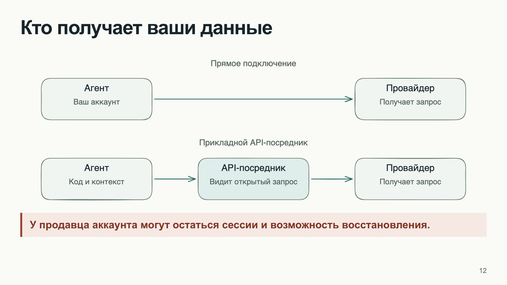
12. Кто получает ваши данные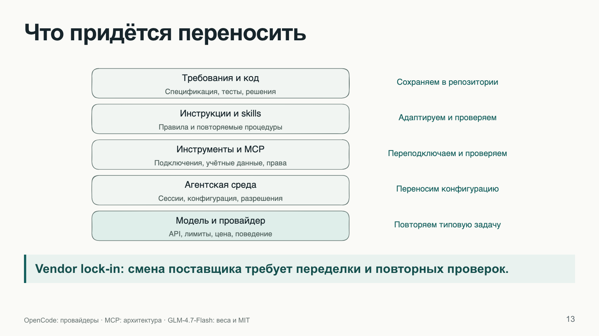
13. Что придётся переносить 14. Из пожелания в ограниченную задачу
14. Из пожелания в ограниченную задачу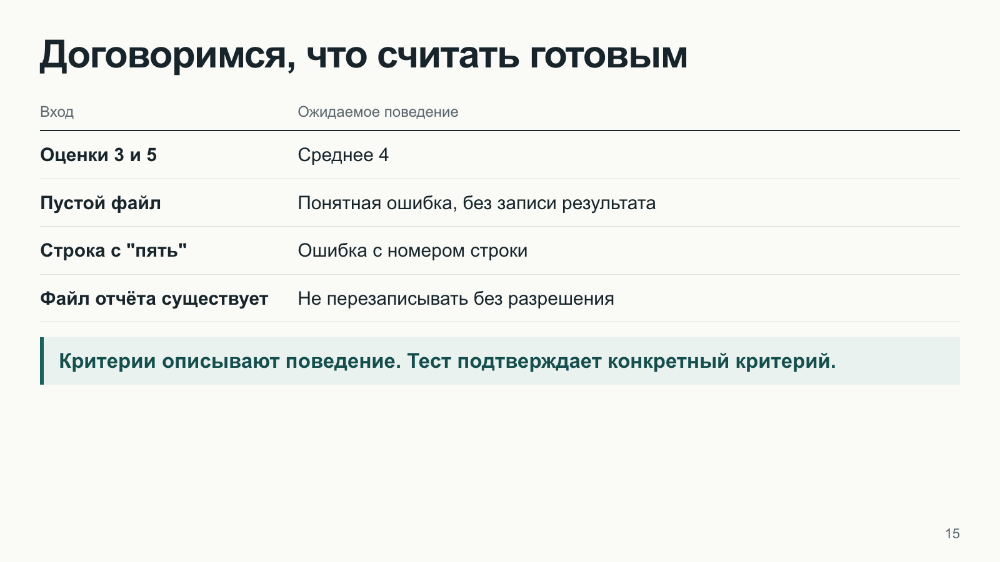
15. Договоримся, что считать готовым 16. SDD связывает требования и проверку
16. SDD связывает требования и проверку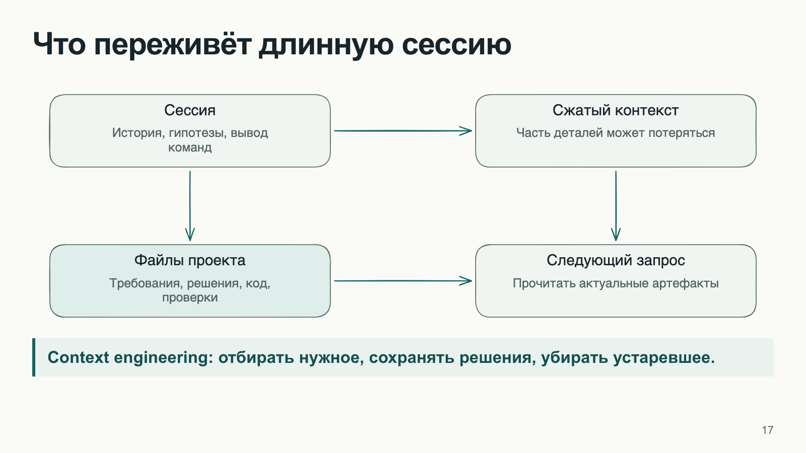
17. Что переживёт длинную сессию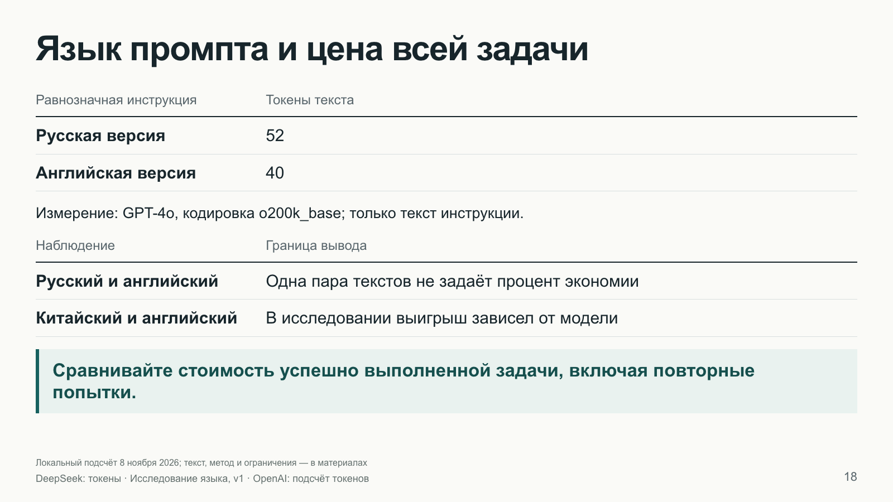
18. Язык промпта и цена всей задачи 19. AGENTS.md: правила работы в проекте
19. AGENTS.md: правила работы в проекте 20. Инструмент, плагин, MCP, skill и хук
20. Инструмент, плагин, MCP, skill и хук 21. MCP: подключение почты
21. MCP: подключение почты 22. Когда стоит создать skill
22. Когда стоит создать skill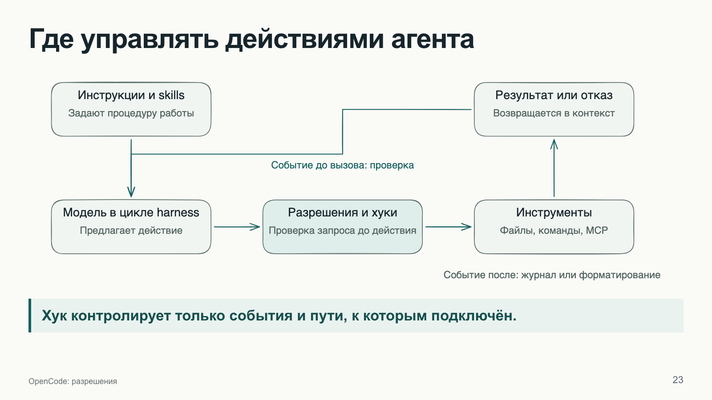
23. Где управлять действиями агента 24. Минимальные права для задачи
24. Минимальные права для задачи 25. Письмо пытается стать командой
25. Письмо пытается стать командой 26. Изоляция зависит от доступов
26. Изоляция зависит от доступов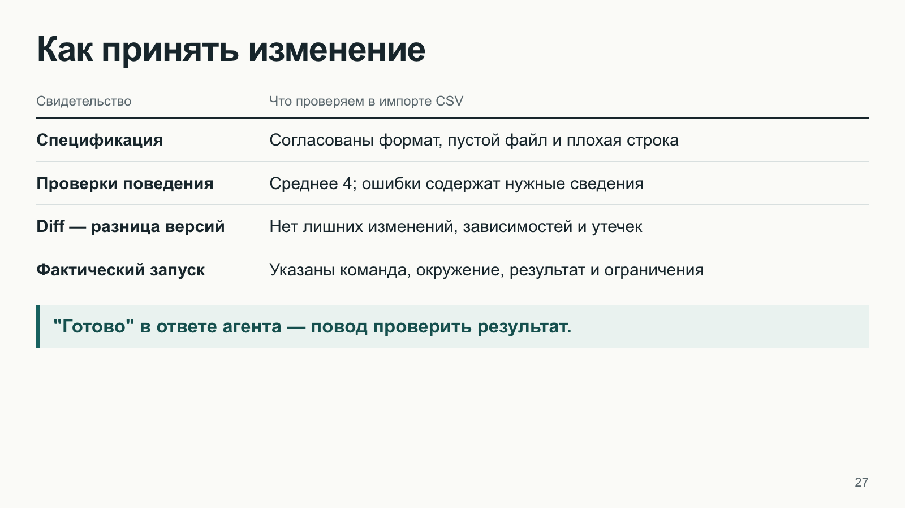
27. Как принять изменение 28. Тест программы и eval агента
28. Тест программы и eval агента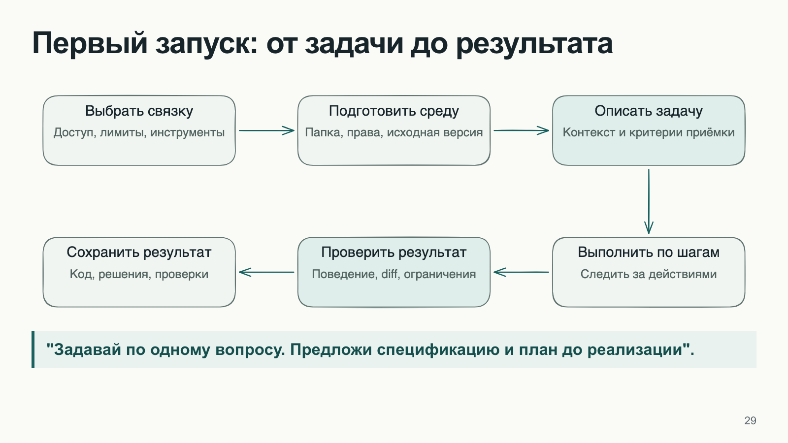
29. Первый запуск: от задачи до результата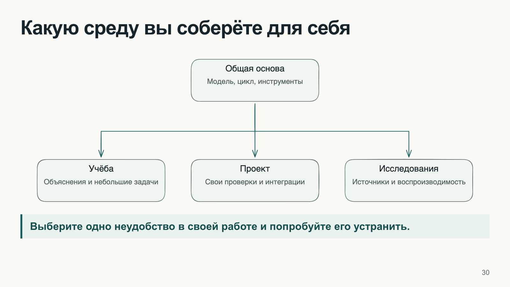
30. Какую среду вы соберёте для себя